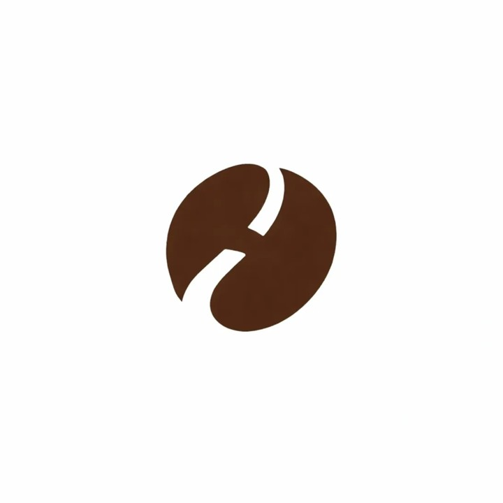

El punto de partida: dos letras, dos productos
Cuando empezamos HARA, teníamos un nombre, dos productos y ningún símbolo. Café de especialidad y gelato artesanal. El desafío: comprimir ambos mundos en una sola imagen.
El nombre HARA viene de Ara — mi esposa. Las dos primeras letras del nombre, H y A, se convirtieron en el punto de partida del logo. La H con sus dos barras verticales tenía forma natural de soporte. La A, dada vuelta, se convertía en un cono de helado. Y era la A de Ara.
H + A invertida = estructura base. La H funciona como marco estable. La A dada vuelta forma el cono. Abajo: la A de Ara, el origen del nombre. A la derecha: la fusión de ambas letras superpuestas.
Con la estructura H+A resuelta, empecé a iterar: ¿cómo agregar el grano de café encima del cono? ¿Cómo integrar los dos productos sin que el símbolo se vuelva recargado?
Seis variaciones explorando diferentes proporciones del grano sobre la base H+A. Distintos tamaños del grano, posiciones, y relación entre el ícono y el wordmark "HARA". Cada iteración buscaba el equilibrio entre legibilidad y síntesis.
Funcionaban, pero tenían un problema: demasiados elementos. La H como base, la A como cono, el grano arriba — eran tres capas apiladas. Un buen símbolo necesita respirar.
El encuentro que cambió todo
En Argentina, las cosas pasan de maneras que no planeás. En algún momento conocimos al Sr. Lee, un diplomático coreano destinado en Buenos Aires. Una de esas conexiones que ocurren naturalmente cuando compartís un idioma y un país lejano.
Mucho después, en marzo de 2025, mientras luchaba con las iteraciones del logo, me acordé de una conversación vieja con él — me había contado que su esposa se había graduado en diseño de joyas en una de las universidades de arte más reconocidas de Corea. Le escribí para pedirle ayuda. Lo que nos llegó fue una hoja completa de exploraciones:
Hoja completa de exploraciones a mano. Arriba a la derecha: "coffee bean + HA" y "원두콩 motif + H" — la idea clave. Múltiples variaciones del grano-cono integrado, con el wordmark "HARA Helado". Notas: "부드럽고 둥글둥글한" (suave y redondeado), "부드러운 아이스크림 및 커피느낌" (sensación de helado suave y café).
De toda esa hoja, un detalle fue el que cambió la dirección: el grano de café donde la grieta central se transformaba sutilmente en una H. No era obvio. No gritaba. Lo sugería.
원두콩 motif + H. A primera vista, un grano de café. Pero la grieta no solo se abre — se conecta en el medio, formando la letra H. Alguien que mira rápido ve un grano. Alguien que mira con atención descubre la H.
La simplificación: quitar para revelar
Con la H viviendo dentro del grano, la H como base del cono se volvía redundante. Así que tomé una decisión de sustracción: eliminar la H como estructura y dejar solo la A invertida como cono, con el grano-H encima.
A invertida + grano-H. Se eliminó la H duplicada como base. Resultado: un cono de gelato con un grano de café encima, donde el grano esconde la H de HARA. Dos productos, una letra, un símbolo.
Tres lecturas simultáneas: 1. Grano de café sobre cono de gelato (producto). 2. A invertida + H escondida (nombre). 3. Café y gelato fusionados en un solo objeto (filosofía).
El refinamiento final
La estructura estaba resuelta. Lo que faltaba era el pulido — proporciones, curvas, el equilibrio entre reconocibilidad y elegancia. Trabajamos con herramientas de IA para refinar cada detalle.
Versión final. Curvas suavizadas. Proporción grano/cono ajustada para que el grano se "apoye" naturalmente. El espacio negativo de la H se hizo más legible sin perder la organicidad. Color: Cacao (#3A2B23) — el tono exacto del espresso.
EVOLUCIÓN COMPLETA
01
Concepto
H + A invertida
como base
02
Iteraciones
6 variaciones
grano sobre H+A
03
Croquis
H integrada en
la grieta del grano
04
Simplificar
Solo A-cono +
grano-H
05
Final
Curvas y
proporciones
Un símbolo, dos formas
El símbolo final contenía dos productos fusionados — pero en la práctica, HARA opera dos líneas distintas. Café y Gelato no siempre aparecen juntos. Un café necesita su propia identidad. Un gelato también.
Así que el logo se dividió en dos versiones que comparten el mismo ADN pero hablan de cosas diferentes:
HARA CAFÉ

El grano-H
Solo el grano de café con la H integrada. Para la línea de cold drip, packaging de botellas, y contextos donde el café es el protagonista.
HARA GELATO
Grano-H + cono-A
El símbolo completo: grano sobre cono. Para la línea de gelato, el catálogo, y cualquier contexto donde los dos productos se presentan juntos.
La lógica es simple: el grano-H funciona solo. El cono-A necesita al grano encima para tener sentido. Entonces el grano es la unidad mínima — y el logo completo es la versión expandida.
Lo que el logo dice sin hablar
LO QUE VES
Un grano de café sobre un cono de gelato. En un segundo entendés: esto es café + gelato.
Mirá un poco más: la grieta del grano forma una H. El cono es una A invertida. Las dos primeras letras de HARA.
Mirá aún más: el grano de café como una bola de gelato sobre un cono. No son dos productos separados. Son uno.
🤝
Sobre las conexiones inesperadas
Este logo no fue diseñado en una agencia. Fue construido entre un emprendedor en Salta, la familia de un diplomático coreano y una herramienta de inteligencia artificial. Tres mundos que no deberían haberse cruzado — pero lo hicieron. Y eso es muy HARA.
Un año que no fue en vano
Aquella conversación con el Sr. Lee fue el 12 de marzo de 2025. Hoy, mientras escribo esto, pasó poco más de un año. Un año de bocetos, iteraciones, simplificaciones, y decisiones de sustracción. Un año que podría parecer mucho para un logo — pero cada día de ese año está comprimido dentro de este símbolo.
Y cuando miro el resultado final, inevitablemente pienso en los años que compartimos con él en este país. Las cenas improvisadas, las charlas sobre la vida lejos de casa, esa solidaridad silenciosa que existe entre coreanos en el sur del mundo. Este logo no nació de un brief ni de un contrato. Nació de una amistad. Y eso, creo, es lo que le da alma.
Un año no fue en vano. Este logo es la prueba.
HARA · COLD UNIVERSE
El logo de HARA nació como nacen las mejores cosas en esta marca: del encuentro entre culturas, la generosidad de las personas, y la paciencia de ir simplificando hasta que solo quede lo esencial.
Bienvenidos al Cold Universe.
출발점: 두 글자, 두 제품
HARA를 시작했을 때, 이름과 두 가지 제품은 있었지만 심볼은 없었습니다. 스페셜티 커피와 아르티잔 젤라또. 과제: 두 세계를 하나의 이미지로 압축하는 것.
HARA라는 이름은 아라 — 제 아내에게서 왔습니다. 이름의 처음 두 글자 H와 A가 로고의 출발점이 되었습니다. H는 두 수직 막대로 자연스러운 지지대 형태를 가지고 있었고, A를 뒤집으면 아이스크림 콘이 됩니다. 그리고 그 A는 아라의 A였습니다.
H + 뒤집힌 A = 기본 구조. H가 안정적인 프레임, 뒤집힌 A가 콘을 형성. 아래: Ara의 A, 이름의 기원. 오른쪽: 두 글자를 겹친 융합 형태.
H+A 구조가 잡힌 후, 반복 작업을 시작했습니다: 콘 위에 커피 원두를 어떻게 올릴 것인가? 두 제품을 통합하면서 심볼이 복잡해지지 않게 하려면?
6가지 변형. H+A 베이스 위에 원두를 올린 다양한 비율 탐구. 원두 크기, 위치, 아이콘과 "HARA" 워드마크의 관계를 달리하며 가독성과 압축 사이의 균형을 찾았습니다.
작동은 했지만 문제가 있었습니다: 요소가 너무 많았습니다. 베이스로서의 H, 콘으로서의 A, 위의 원두 — 세 겹이 쌓여 있었습니다. 좋은 심볼에는 여백이 필요합니다.
모든 것을 바꾼 만남
아르헨티나에서는 계획하지 않은 방식으로 일이 일어납니다. 언젠가 부에노스아이레스에 주재하던 한국 외교관 Sr. Lee를 만났습니다. 같은 언어와 먼 고향을 공유할 때 자연스럽게 생기는 인연이었습니다.
한참 후인 2025년 3월, 로고 이터레이션과 씨름하던 중 문득 예전 그와의 대화가 떠올랐습니다 — 아내분이 한국에서 미술 분야로 가장 유명한 대학에서 보석 디자인을 전공했다고 했던 이야기. 도움을 요청했습니다. 돌아온 것은 탐구로 가득한 한 장의 크로키였습니다:
손으로 그린 전체 탐구 시트. 오른쪽 상단: "coffee bean + HA"와 "원두콩 motif + H" — 핵심 아이디어. 다양한 원두-콘 통합 변형과 "HARA Helado" 레터링. 메모: "부드럽고 둥글둥글한", "부드러운 아이스크림 및 커피느낌".
그 한 장에서 방향을 바꾼 디테일은: 원두의 중심 갈라진 틈이 미묘하게 H로 변하는 형태였습니다. 눈에 띄지 않았습니다. 소리치지 않았습니다. 암시했습니다.
원두콩 motif + H. 얼핏 보면 커피 원두. 하지만 갈라진 틈이 단순히 벌어지는 게 아니라 가운데서 연결되어 H를 형성합니다. 빠르게 보면 원두, 자세히 보면 H가 숨어 있습니다.
단순화: 빼서 드러내기
H가 원두 안에 살게 되자, 콘 베이스로서의 H는 중복이 되었습니다. 뺄셈의 결정: 구조물로서의 H를 제거하고, 뒤집힌 A만 콘으로 남기고 그 위에 원두-H를 올렸습니다.
뒤집힌 A + 원두-H. 중복된 H 베이스 제거. 결과: 젤라또 콘 위에 커피 원두, 그 원두 안에 HARA의 H. 두 제품, 하나의 글자, 하나의 심볼.
세 가지 동시 독해: 1. 콘 위의 커피 원두 (제품). 2. 뒤집힌 A + 숨겨진 H (이름). 3. 커피와 젤라또가 하나로 합쳐진 모습 (철학).
최종 리파인먼트
구조는 해결되었습니다. 남은 것은 세공 — 비율, 곡선, 인식 가능성과 우아함의 균형. AI 도구와 협업하여 모든 디테일을 다듬었습니다.
최종 버전. 곡선 부드럽게. 원두/콘 비율 조정 — 원두가 자연스럽게 안착. H의 네거티브 스페이스가 유기적 느낌을 잃지 않으면서 더 읽기 쉽게. 색상: Cacao (#3A2B23) — 갓 추출한 에스프레소의 톤.
하나의 심볼, 두 가지 형태
최종 심볼에는 두 제품이 융합되어 있었지만, 실제로 HARA는 두 개의 별도 라인을 운영합니다. 커피와 젤라또가 항상 함께 등장하지는 않습니다. 커피에는 커피만의 정체성이, 젤라또에는 젤라또만의 정체성이 필요합니다.
그래서 로고는 같은 DNA를 공유하지만 다른 이야기를 하는 두 가지 버전으로 나뉘었습니다:
HARA CAFÉ
원두-H
H가 통합된 커피 원두만. 콜드 드립 라인, 병 패키징, 커피가 주인공인 모든 맥락에서 사용.
HARA GELATO
원두-H + 콘-A
완전한 심볼: 콘 위의 원두. 젤라또 라인, 카탈로그, 두 제품이 함께 소개되는 모든 맥락에서 사용.
논리는 단순합니다: 원두-H는 단독으로 작동합니다. 콘-A는 위에 원두가 있어야 의미가 생깁니다. 따라서 원두가 최소 단위이고, 전체 로고가 확장 버전입니다.
말하지 않고 말하는 것
당신이 보는 것
젤라또 콘 위의 커피 원두. 1초면 이해: 커피 + 젤라또.
조금 더 보세요: 원두의 갈라진 틈이 H. 콘은 뒤집힌 A. HARA의 처음 두 글자.
더 깊이: 커피 원두가 콘 위의 젤라또 한 스쿱. 두 제품이 아니라 하나.
🤝
예상치 못한 인연에 대하여
이 로고는 에이전시에서 나오지 않았습니다. 살타의 창업자, 한국 외교관의 가족, 인공지능 도구 사이에서 만들어졌습니다. 교차하지 않았어야 할 세 세계 — 하지만 교차했습니다. 그것이 매우 HARA답습니다.
헛되지 않았던 1년
Sr. Lee와 그 대화를 나눈 것이 2025년 3월 12일이었습니다. 이 글을 쓰는 지금, 1년 조금 넘는 시간이 흘렀습니다. 스케치, 이터레이션, 단순화, 뺄셈의 결정들로 채워진 1년. 로고 하나에 1년이 길다고 느낄 수도 있지만 — 그 1년의 모든 날이 이 심볼 안에 압축되어 있습니다.
최종 결과물을 바라보면, 자연스럽게 그와 이 나라에서 함께한 시간들이 떠오릅니다. 즉흥적인 저녁 식사들, 고향에서 멀리 떨어진 삶에 대한 대화들, 세상의 남쪽 끝에서 한국인들 사이에 존재하는 조용한 연대. 이 로고는 브리프에서도, 계약서에서도 나오지 않았습니다. 우정에서 나왔습니다. 그것이, 저는 생각합니다, 이 로고에 영혼을 불어넣은 것입니다.
1년은 헛되지 않았습니다. 이 로고가 그 증거입니다.
HARA · COLD UNIVERSE
HARA의 로고는 이 브랜드의 가장 좋은 것들이 태어나는 방식으로 태어났습니다: 문화의 만남, 사람들의 관대함, 본질만 남을 때까지 계속 덜어내는 인내에서.
Cold Universe에 오신 것을 환영합니다.
The starting point: two letters, two products
When we started HARA, we had a name, two products, and no symbol. Specialty coffee and artisan gelato. The challenge: compress both worlds into a single image.
The name HARA comes from Ara — my wife. The first two letters, H and A, became the logo's starting point. The H with its two vertical bars had a natural support structure. The A, flipped upside down, became a gelato cone. And it was Ara's A.
H + inverted A = base structure. The H works as a stable frame. The flipped A forms the cone. Below: the A from Ara, the origin of the name. Right: the fusion of both letters overlaid.
With the H+A structure in place, I began iterating: how to add a coffee bean on top of the cone? How to integrate both products without overloading the symbol?
Six variations exploring different proportions of the bean on the H+A base. Different bean sizes, positions, and relationships between the icon and the "HARA" wordmark. Each iteration sought the balance between legibility and synthesis.
They worked, but had a problem: too many elements. The H as base, the A as cone, the bean on top — three stacked layers. A good symbol needs room to breathe.
The encounter that changed everything
In Argentina, things happen in unplanned ways. At some point we met Mr. Lee, a Korean diplomat stationed in Buenos Aires. One of those connections that happen naturally when you share a language and a faraway homeland.
Much later, in March 2025, while struggling with logo iterations, I remembered an old conversation with him — he'd mentioned that his wife had graduated in jewelry design from one of the most recognized art universities in Korea. I reached out to ask for help. What arrived was a full page of explorations:
Full hand-drawn exploration sheet. Top right: "coffee bean + HA" and "원두콩 motif + H" — the key idea. Multiple bean-cone integration variations with "HARA Helado" wordmark. Notes: "부드럽고 둥글둥글한" (soft and rounded), "부드러운 아이스크림 및 커피느낌" (soft ice cream and coffee feel).
From that entire sheet, one detail changed the direction: the coffee bean where the central crack subtly transformed into an H. It wasn't obvious. It didn't shout. It suggested.
Coffee bean motif + H. At first glance, a coffee bean. But the crack doesn't just split — it connects in the middle, forming the letter H. A quick look sees a bean. A careful look discovers the hidden H.
Simplification: removing to reveal
With the H living inside the bean, the H as cone base became redundant. A decision of subtraction: remove the H as structure and leave only the inverted A as cone, with the bean-H on top.
Inverted A + bean-H. Duplicate H base removed. Result: a gelato cone with a coffee bean on top, where the bean hides HARA's H. Two products, one letter, one symbol.
Three simultaneous readings: 1. Coffee bean on gelato cone (product). 2. Inverted A + hidden H (name). 3. Coffee and gelato merged into one object (philosophy).
The final refinement
The structure was resolved. What remained was polish — proportions, curves, the balance between recognizability and elegance. We worked with AI tools to refine every detail.
Final version. Curves softened. Bean/cone proportion adjusted so the bean rests naturally. The H's negative space became more legible without losing the organic feel. Color: Cacao (#3A2B23) — the exact tone of freshly extracted espresso.
FULL EVOLUTION
01
Concept
H + inverted A
as base
02
Iterations
6 variations
bean on H+A
03
Sketch
H integrated into
bean's crack
04
Simplify
Only A-cone +
bean-H
05
Final
Curves and
proportions
One symbol, two forms
The final symbol fused two products — but in practice, HARA operates two distinct lines. Coffee and Gelato don't always appear together. Coffee needs its own identity. So does gelato.
So the logo split into two versions that share the same DNA but tell different stories:
HARA CAFÉ
The bean-H
Just the coffee bean with the integrated H. For the cold drip line, bottle packaging, and any context where coffee is the protagonist.
HARA GELATO
Bean-H + cone-A
The complete symbol: bean on cone. For the gelato line, the catalogue, and any context where both products are presented together.
The logic is simple: the bean-H works alone. The cone-A needs the bean on top to make sense. So the bean is the minimum unit — and the full logo is the expanded version.
What the logo says without speaking
WHAT YOU SEE
A coffee bean on a gelato cone. One second to understand: coffee + gelato.
Look closer: the bean's crack forms an H. The cone is an inverted A. The first two letters of HARA.
Look deeper: the coffee bean as a scoop of gelato on a cone. Not two products. One.
🤝
On unexpected connections
This logo wasn't designed in an agency. It was built between an entrepreneur in Salta, the family of a Korean diplomat, and an AI tool. Three worlds that shouldn't have crossed paths — but did. And that's very HARA.
A year that wasn't wasted
That conversation with Mr. Lee was on March 12, 2025. As I write this, just over a year has passed. A year of sketches, iterations, simplifications, and decisions of subtraction. A year that might seem like a lot for a logo — but every day of that year is compressed inside this symbol.
When I look at the final result, I inevitably think about the years we shared with him in this country. The impromptu dinners, the conversations about life far from home, that quiet solidarity that exists between Koreans at the southern end of the world. This logo didn't come from a brief or a contract. It came from a friendship. And that, I believe, is what gives it a soul.
A year wasn't wasted. This logo is the proof.
HARA · COLD UNIVERSE
The HARA logo was born the way the best things in this brand are born: from the encounter between cultures, the generosity of people, and the patience to keep simplifying until only the essential remains.
Welcome to the Cold Universe.